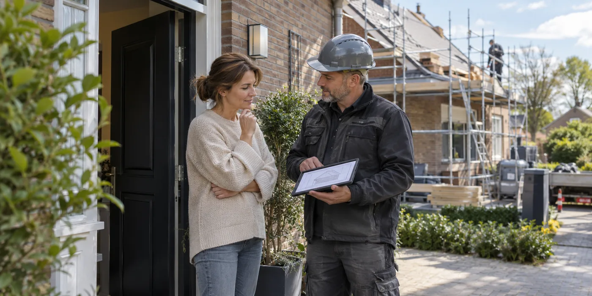

Bespreek de dagelijkse situatie
Vertel welke kamers onder het dak liggen en wanneer er iemand thuis is. Vraag welke zones tijdens het werk niet toegankelijk zijn en hoe materialen worden aangevoerd. Stem afspraken af op thuiswerk, kinderen of huisdieren zonder te verwachten dat een algemene planning alle details dekt. Leg contactpersonen vast voor vragen tijdens de uitvoering.
Vraag hoe het open dak beschermd wordt
Bespreek welke delen per fase worden geopend en hoe de aannemer weersveranderingen opvolgt. Laat uitleggen wie beslist om werk uit te stellen en welke tijdelijke bescherming voorzien is. Een concrete werfmethode is nuttiger dan alleen de belofte dat er zo snel mogelijk gewerkt wordt. Laat de planning ook ruimte voor onverwachte vaststellingen.

Koppel planning aan oplevering
Vraag wanneer binnenafwerking, opruiming en eventuele herstellingen aan aansluitende delen plaatsvinden. Maak vóór de werken foto’s van ruimtes die geraakt kunnen worden. Bespreek vooraf waar afval en materieel komen. Zo worden de praktische verwachtingen onderdeel van de opdracht en kun je bij de oplevering zowel het dak als de werfafwerking bespreken.
Maak uitzonderingen bespreekbaar
Een werf loopt niet elke dag precies volgens dezelfde uren of route. Spreek af hoe wijzigingen worden aangekondigd en wie toestemming vraagt als een andere ruimte nodig is. Bespreek bereikbaarheid van de woning en waar leveringen mogen staan. Laat belangrijke afspraken schriftelijk bevestigen zonder een onnodig ingewikkeld draaiboek te maken. Een korte lijst met contactpersoon, toegankelijke zones en beslismomenten helpt vaak meer dan een algemene belofte dat de hinder beperkt blijft.
Een praktisch voorbeeld
Je werkt op de zolderkamer terwijl het onderdak wordt vervangen. Spreek vooraf af op welke dagen die ruimte niet bruikbaar is, in plaats van tijdens de werf te moeten improviseren met je werkplek.
Illustratief scenario, geen klantcase.
Neem dit mee naar je gesprek
- Toegang tot kamers en woning
- Dagelijks aanspreekpunt
- Bescherming en weerbeslissingen
- Opruiming en binnenafwerking
Veelgestelde vraag
Hoeveel dagen duren dakwerken?
Dat hangt van jouw opdracht en het weer af. Vraag een projectplanning met fasen en beslismomenten.
Bron en achtergrond
Buildwise: officiële of technische achtergrond bij dit onderwerp ↗
Geraadpleegd op 13 oktober 2026. De praktische checklist en het voorbeeld zijn redactionele uitwerkingen. Fabrikantinformatie geldt voor de beschreven producten; ze is geen algemene garantie voor andere systemen.
Wat betekent dit voor jouw woning?
Gebruik de calculator voor een eerste indicatie. Een vakman beoordeelt jouw situatie en bevestigt de uitvoering en definitieve prijs.
Bekijk de dakwerkencalculator →